A UX-led initiative to streamline complex clinician workflows, reduce error-prone intake processes, and deliver a scalable design system for regulated healthcare software.
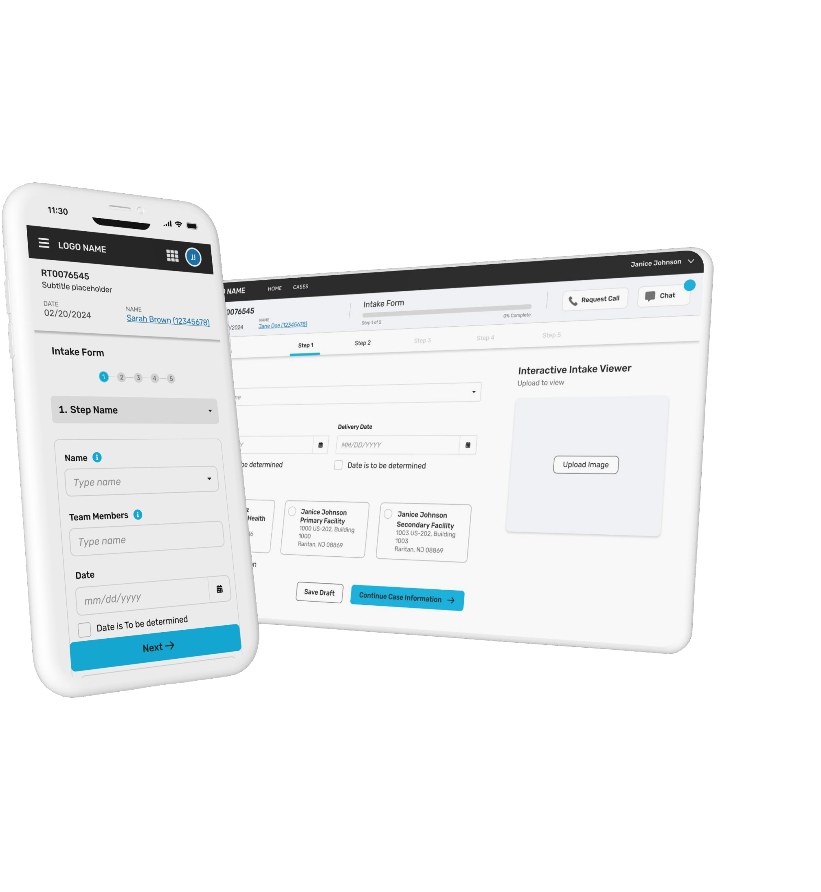
Outcomes validated through clinician satisfaction surveys, design system adoption metrics, and delivery velocity tracked across sprint cycles.
A UX-led approach to simplify case creation, prevent errors early, and support high-stakes clinical decisions without adding cognitive or administrative burden.
A structured process that moved from understanding surgeon workflows to delivering tested, developer-ready interfaces.
The intake form is the single source of truth for the entire surgical planning process.
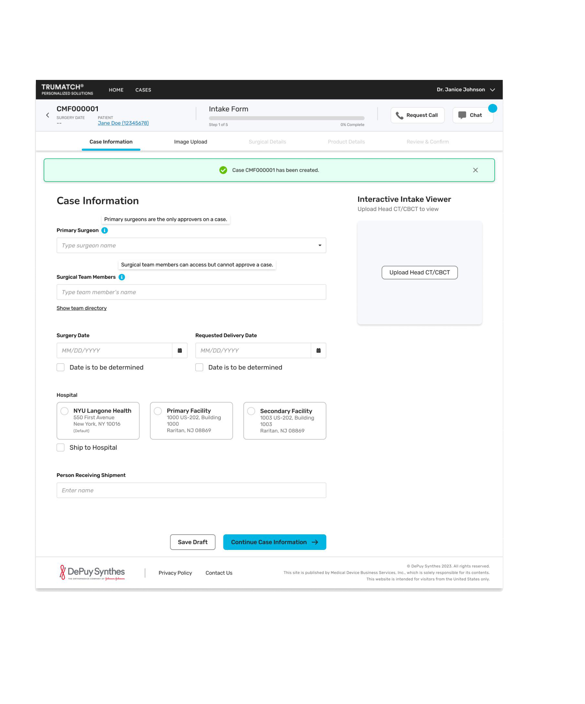
Early ideation focused on progressive onboarding for new surgeons and smart preference management to reduce cognitive load across key mentors: Registration, Case Page, Chat & Schedule.
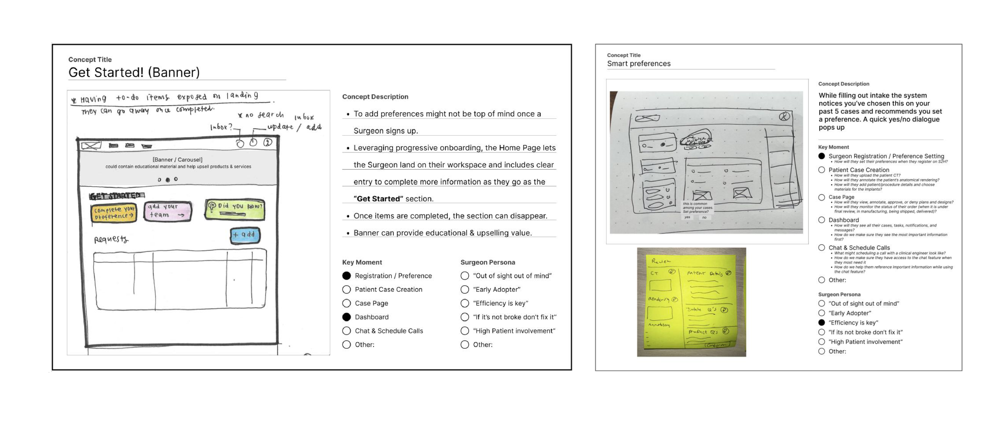
Three core wireframe explorations defined the structural decisions for the intake flow.
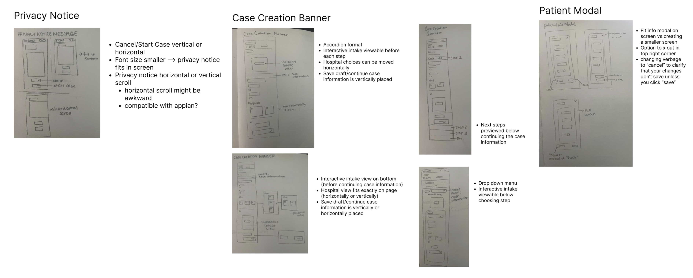
A dynamic, scalable design system built in Figma using the Nunito typeface, clinical color tokens, and reusable SDH components: supporting multiple product branches with one-click style propagation.
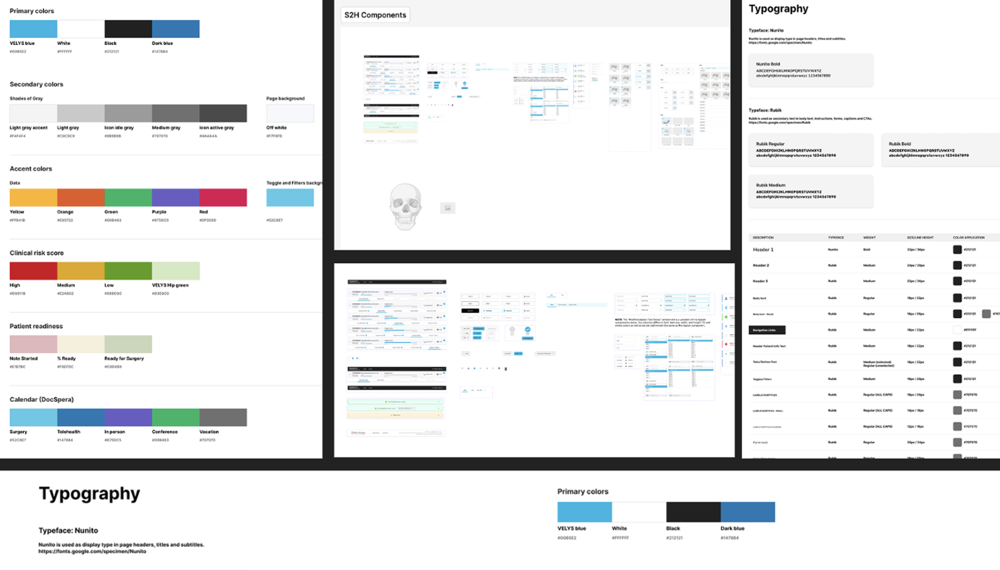
The complete hi-fidelity design across the surgeon dashboard, case management, intake form, and implant viewer: all designed within Appian platform constraints.
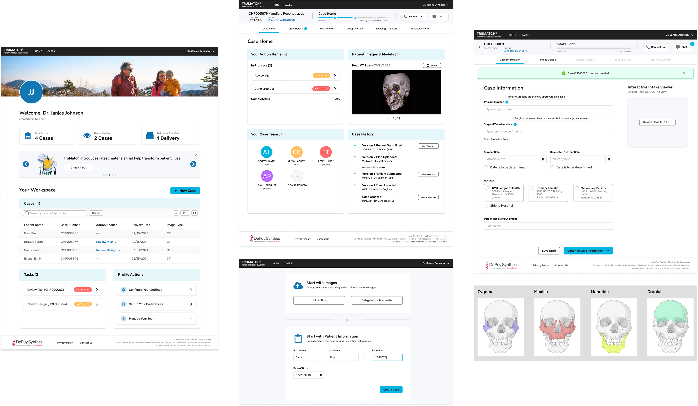
Mobile was not an afterthought; it was a core use case.
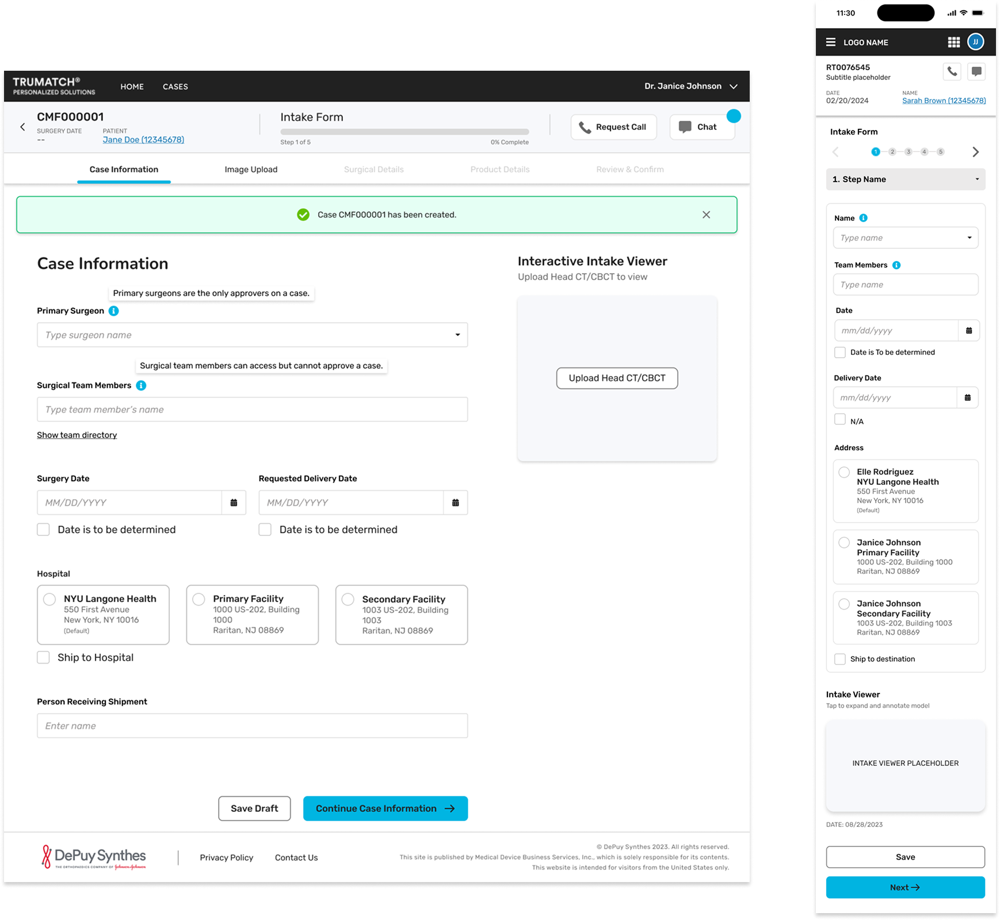
Multiple iterations were explored to give surgeons the ability to move freely between steps without breaking the form's data integrity.
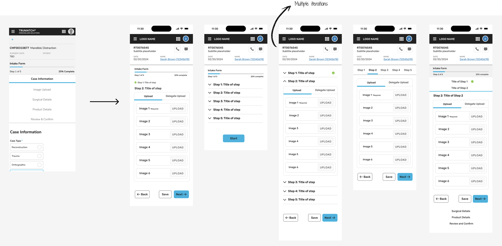
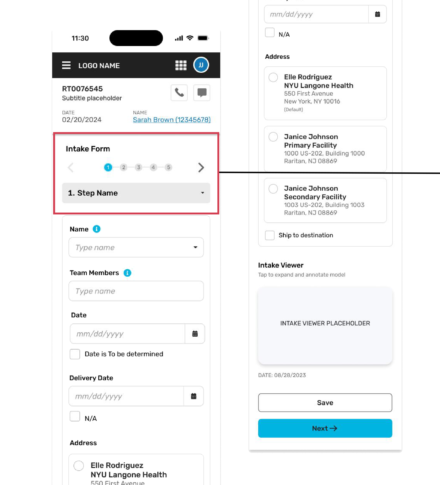
Mobile experience is intentionally limited to image upload, with delegate-only access enabled for efficient task assignment.
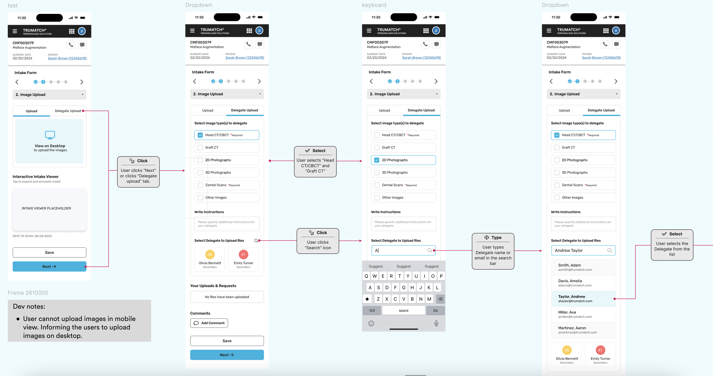
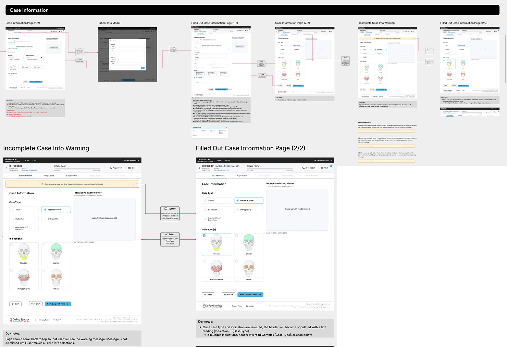
Let's talk about design, healthcare tech, or your next product challenge.